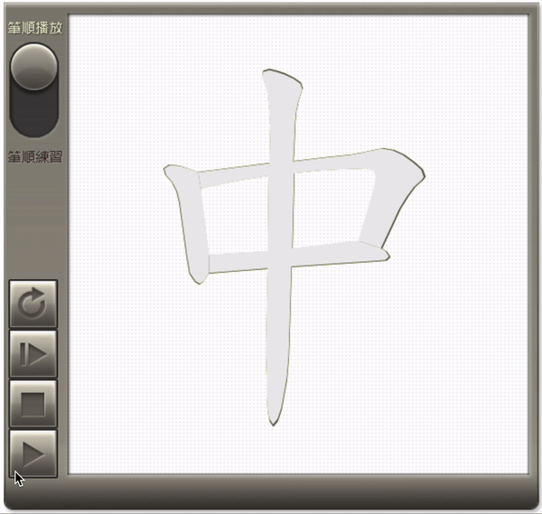
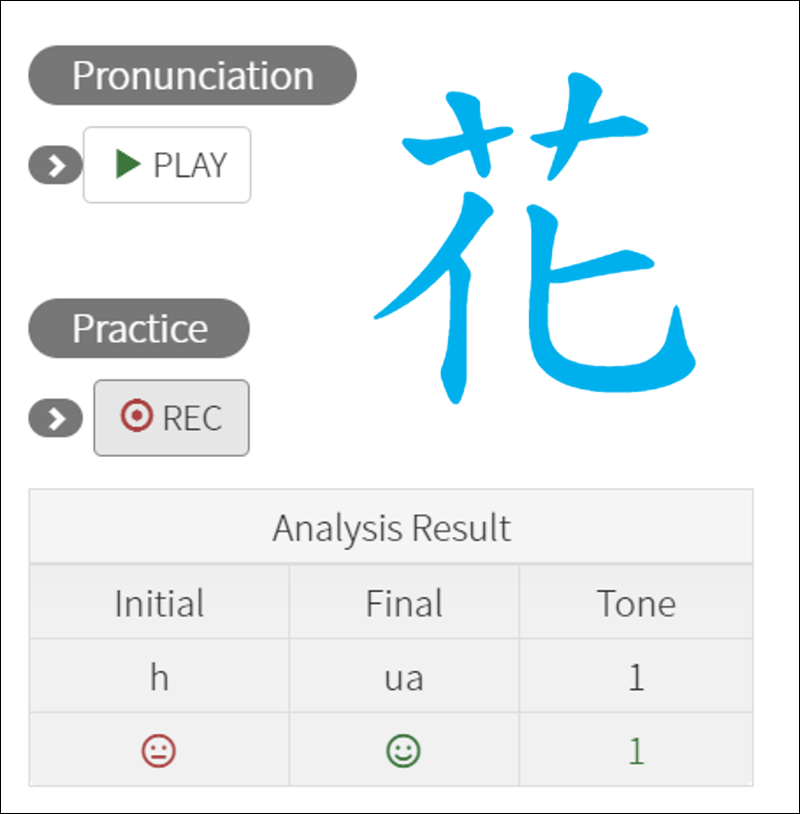
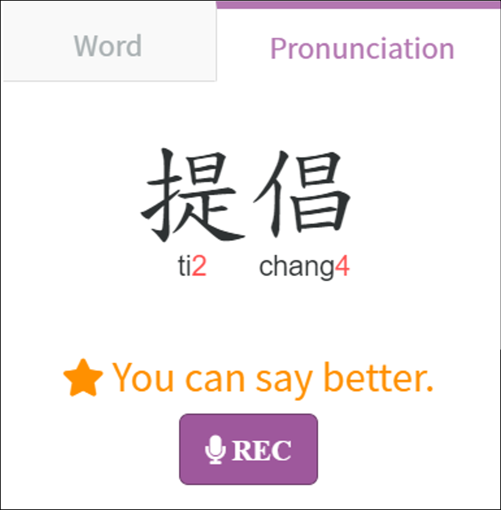
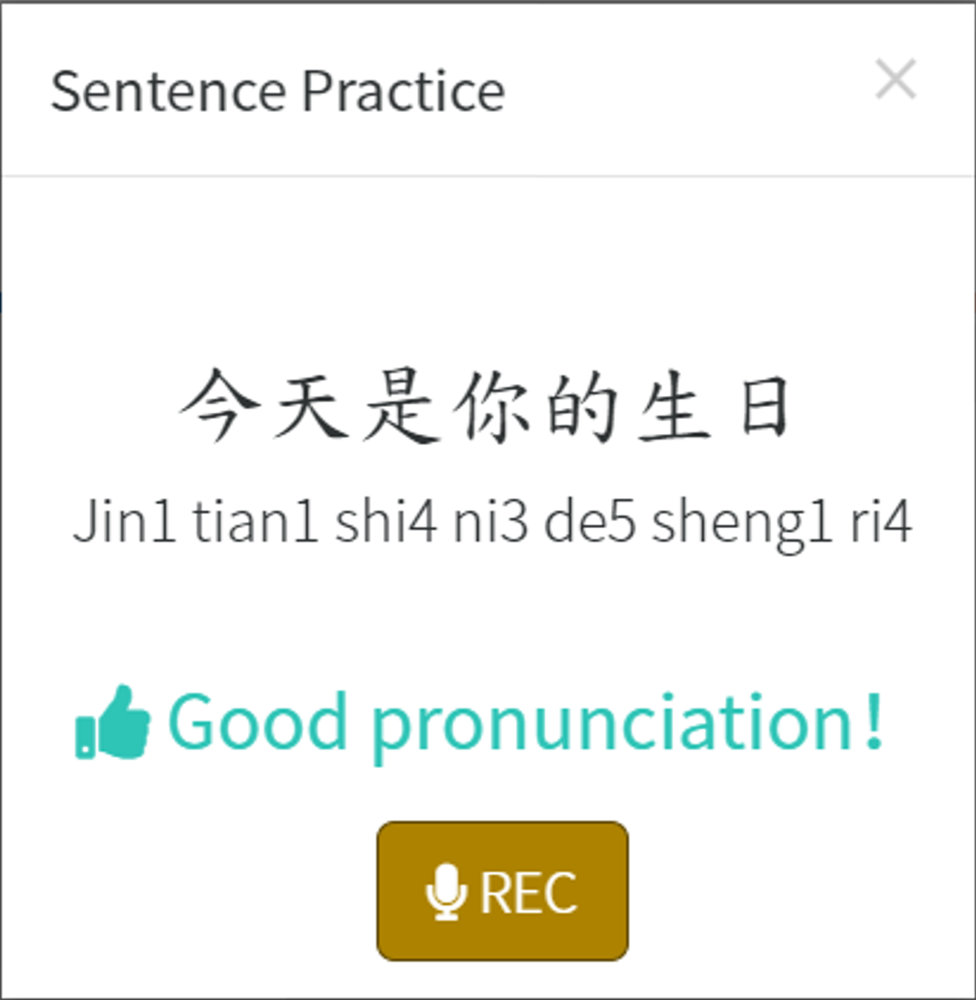

研究技術
在學習語言的過程中，練習是不可或缺的。不論是書寫漢字的練習、識字閱讀的練習，或是口說與聽力的練習，如果能有即時的回饋，效果會更好。臺師大研究團隊透過應用eMPOWER的實驗，證明了eMPOWER相關的功能對學習中文的效果。

字書寫對漢字學習的重要性
漢字書寫對於漢字辨識與學習的重要性一直飽受爭論，許多以華語為外語的學習者，因書寫漢字困難，且認為寫字無助於識字而抗拒學習寫字。Hsiung等人(2017)和 Hsiao 等人(2015) 以電腦呈現漢字及筆順動畫來讓學生學習漢字，並且以電腦紀錄學生寫字的歷程軌跡，分析透過書寫練習與筆順播放的學習是否會影響CFL學生的識字與寫字學習成效。結果發現，練習書寫的參與者，其漢字字義辨識的立即學習成效與延宕記憶的效果顯著優於沒練習書寫的參與者。而透過觀看筆順動畫同時練習寫字，可以提升學習者對於漢字的字形、字義及筆畫順序的學習成效。顯示在CFL的識字教學中，寫字及筆畫教學能夠有效的提升其識字與寫字的學習效果。
語音回饋對口說和聽力學習的重要性
Hsiao等人(2014)將語音回饋系統建置入電腦化適性測驗，並提供中文為外語的學生進行練習。結果發現，適性的回饋對於學生的口說和聽力都有顯著的影響。



國際期刊
- 林振興、熊襄瑜、林筠婕（2021）。線上鍵接圖漢字教學對以華語為外語學習者的漢字學習興趣及成效研究。華語文教學研究。18(2) 99-121 (THCI Core)
- 林振興、王暄博 (2019) 。應用字本位教學法對提升初級華語學習者漢字與詞彙能力之成效研究。教育科學研究期刊。64(2) 1-37 (TSSCI)
- Chang, L. Y., Chen, J. Y., Perfetti, C. A., & *Chen, H. C. (2019, June). The effect of key-image mnemonics to support character learning of Chinese-as-foreign-language learners. Journal of Chinese Language Teaching, 16(2), 31-74.
- Tsai, M. H., Chang, L.Y, *Chen, H. C., & Lin, C. L. (2021, Aug). Effects of key-image mnemonics on Chinese instruction for first-grade students ’achievement and interest toward Chinese learning. International Journal of Educational Research.
- Hsiao, H. S., Lin, C. Y., Chang, C. C., & Chen, J. C. (2014). The Development and evaluation of listening and speaking diagnosis and remedial teaching system. British Journal of Educational Technology.
- Hsiao, H. S., Chang, C. S., Chen, C. J., Wu, C. H., & Lin, C. Y. (2015). The influence of Chinese character handwriting diagnosis and remedial instruction system on learners of Chinese as a foreign language. Computer Assisted Language Learning, 28(4), 306-324.
- Hsiung, H. Y., Chang, Y. L., Chen, H. C., & Sung, Y. T. (2017). Effect of stroke-order learning and handwriting exercises on recognizing and writing Chinese characters by Chinese as a foreign language learners. Computers in Human Behavior, 74, 303-310.